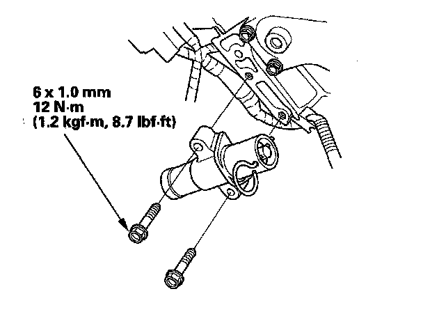

Timing Belt Replacement
Timing Belt ReplacementNOTE: The following procedure is for the installation of a new timing belt. If you are installing a used belt, refer to the timing belt installation procedure.
1. Remove the timing belt.
2. Clean the timing belt pulleys, timing belt guide plate, and the upper and lower covers.
3. Set the timing belt drive pulley to top dead center (TDC) by aligning the TDC mark (A) on the tooth of the timing belt drive pulley with the pointer (B) on the oil pump.
4. Set the camshaft pulleys to TDC by aligning the TDC marks (A) on the camshaft pulleys with the pointers (B) on the back covers.
5. Remove the battery clamp bolt from the back cover.
6. Remove the auto-tensioner.
7. Align the holes on the rod and housing of the auto-tensioner.
8. Use a hydraulic press to slowly compress the auto-tensioner. Insert a 2.0 mm (0.08 in.) pin through the housing and the rod.
NOTE: The compression pressure should not exceed 9,800 N (1,000 kgf, 2,200 lbf).
9. Install the auto-tensioner.
NOTE: Make sure the pin stays in place.

10. Thread the battery clamp bolt in as shown to hold the timing belt adjuster. Tighten it by hand; do not use a wrench.
11. Loosely install the idler pulley with a new idler pulley bolt so the pulley can move but does not come off.
12. Install the timing belt in a counterclockwise sequence starting with the drive pulley.
- 1 Drive pulley (A)
- 2 Idler pulley (B)
- 3 Front camshaft pulley (C)
- 4 Water pump pulley (D)
- 5 Rear camshaft pulley (E)
- 6 Adjusting pulley (F)
13. Tighten the idler pulley bolt.
14. Remove the pin from the auto-tensioner.
15. Remove the battery clamp bolt from the back cover.
16. Install the lower half of the side engine mount bracket.
17. Install the timing belt guide plate as shown.
18. Install the lower cover.
19. Install the front upper cover (A) and rear upper cover (B).
20. Install the crankshaft pulley.
21. Rotate the crankshaft pulley about five or six turns clockwise so the timing belt positions itself on the pulleys.
22. Turn the crankshaft pulley so its white mark (A) lines up with the pointer (B).
23. Check the camshaft pulley marks.
NOTE: If the marks are not aligned, rotate the crankshaft 360 degrees, and recheck the camshaft pulley mark.
^ If the camshaft pulley marks are at TDC, go to step 24.
^ If the camshaft pulley marks are not at TDC, remove the timing belt and repeat steps 3 through 22.
24. Install the upper half of the side engine mount bracket, and tighten the new mounting bolts (A), then tighten the mass damper mounting bolt (B).
25. Install the ground cable (C).
26. Install the drive belt auto-tensioner.
27. Install the drive belt.
28. Install the splash shield.
29. Install the right front wheel.
30. Do the crankshaft position (CKP) pattern clear/CKP pattern learn procedure.